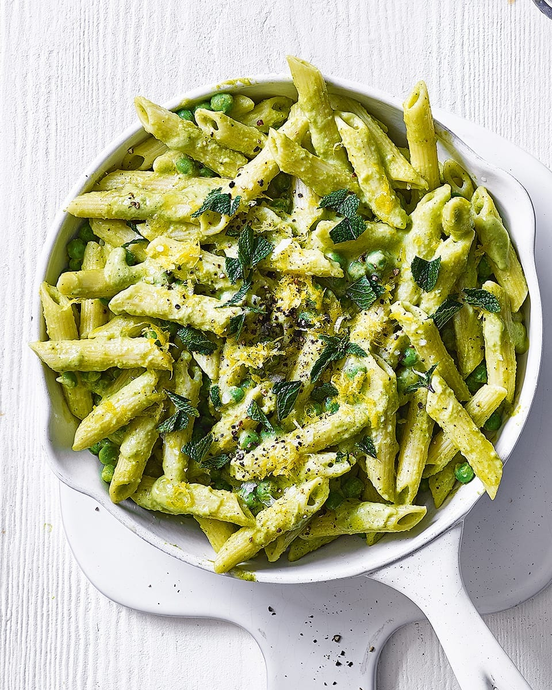

Pasta

Description
Indulge in the vibrant flavors of this Verde Pasta, a delightful Italian-inspired
dish that combines the freshness of garden herbs with the richness of pasta. In
this recipe, al dente spaghetti or your favorite pasta variety is tossed in a
velvety green sauce made from a medley of basil, spinach, and fresh parsley,
blended to perfection with garlic, pine nuts, and grated Parmesan cheese. The
result is a luscious, herbaceous pesto sauce that clings beautifully to each
strand of pasta. Garnished with a sprinkle of extra Parmesan and a few pine nuts,
this Verde Pasta is a celebration of simple ingredients that come together to
create a stunningly delicious meal. It's perfect for a quick weeknight dinner or
a special occasion when you want to impress your guests with a burst of fresh,
Italian-inspired flavors.
Ingredients
- 8 ounces (about 225 grams) of spaghetti or your favorite pasta
- 2 cups fresh basil leaves
- 1 cup fresh spinach leaves
- 1/4 cup fresh parsley leaves
- 2 cloves garlic, minced
- 1/4 cup pine nuts
- 1/2 cup grated Parmesan cheese, plus extra for garnish
- 1/2 cup extra-virgin olive oil
- Salt and black pepper to taste
- Pine nuts and additional Parmesan for garnish (optional)
Steps
- Bring a large pot of salted water to a boil. Add the pasta and cook according to the
package instructions until it's al dente. Drain the pasta and set it aside.
- In a food processor, combine the basil, spinach, parsley, minced garlic, pine nuts,
and grated Parmesan cheese. Pulse until the ingredients are finely chopped and well
blended.
- While the food processor is running, slowly drizzle in the extra-virgin olive oil until
the mixture forms a smooth, vibrant green sauce. Season the sauce with salt and black
pepper to taste.
- In a large mixing bowl, combine the cooked pasta and the Verde sauce. Toss the pasta
until it's evenly coated with the delicious green sauce.
- Plate the Verde Pasta on individual serving dishes. Garnish with additional grated Parmesan
cheese and a sprinkle of pine nuts, if desired.
- Serve immediately while it's still warm and enjoy the fresh, herbaceous flavors!